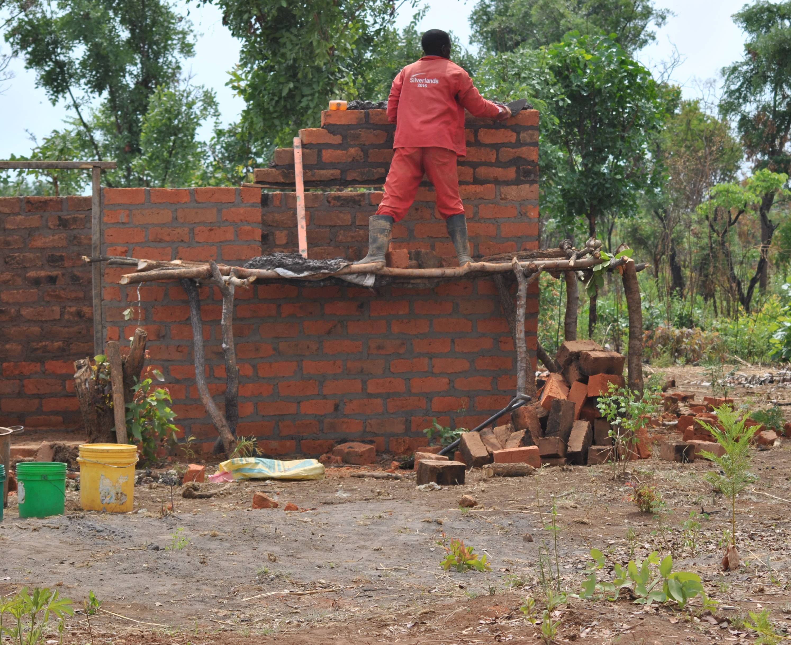
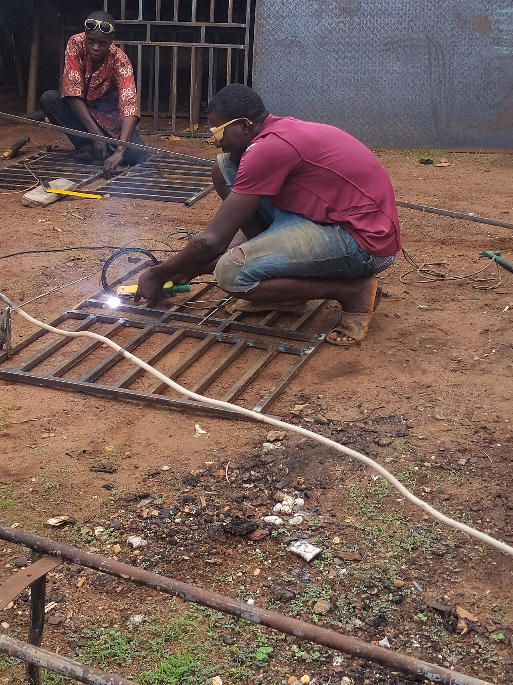

Lo que hacemos,
bien hecho.
Especialistas en obra y remodelación con atención al detalle y cuidado en cada etapa del trabajo. Ejecutamos directamente en campo, en Puebla y municipios cercanos.
Albañilería
Cimentación, levantamiento de muros, colocación de tabique, castillos, trabes, firmes de concreto y mantenimiento de estructuras existentes.
Trabajos principales
- Levantamiento de bardas perimetrales
- Pisos firmes de concreto
- Zapatas y cimentaciones
- Reparación de grietas y cuarteaduras
- Mantenimiento y refuerzo de muros
- Aplanados rústicos, esponjeados y pulidos

Herrería
Diseño, fabricación e instalación de portones, barandales, protecciones para ventanas, techumbres ligeras y estructuras metálicas.
Trabajos metálicos
- Portones corredizos y abatibles
- Barandales y pasamanos
- Techumbres ligeras y pérgolas
- Protecciones para puertas y ventanas
- Rejas perimetrales
- Escaleras y rampas metálicas

Ampliación de habitaciones y construcción
Ampliación de cuartos, construcción de recámaras extras, segundos pisos, colado de losas y techados con estructura.
Trabajos de ampliación
- Cuartos adicionales y recámaras
- Construcción de segundos pisos
- Colado de losas de concreto
- Apertura de puertas y ventanas
- Refuerzo de columnas y castillos
- Ampliación de cocheras y patios

Renovaciones
Renovación de casas, departamentos y locales comerciales. Cambio de pisos, demoliciones menores, redistribución de espacios y acabados.
Trabajos de remodelación
- Colocación de pisos y azulejos
- Demolición menor y retiro de escombros
- Redistribución de espacios y cancelería
- Acabados en muros y plafones
- Remodelación de baños y cocinas
- Renovación de fachadas

Restauración
Atención a problemas de humedad, salitre, cuarteaduras en muros, sellado de grietas y mantenimiento de muros de mampostería.
Trabajos
- Resane de fisuras y grietas
- Reparación de filtraciones en techos
- Renovación de aplanados desgastados
- Mantenimiento de muros de mampostería
- Sellado y protección en losas
- Tratamiento de salitre y humedad en muros

Dirección de obras
Coordinación continua de los trabajos en sitio, control de albañiles y herreros, revisión de avances y cuidado de materiales durante toda la obra.
Actividades en sitio
- Revisión de materiales recibidos
- Verificación de niveles, plomos y escuadras
- Seguimiento de tiempos acordados
- Reportes de avance para el cliente
- Cuidado y administración de materiales
- Acompañamiento directo durante toda la obra

Servicios auxiliares
Trabajos adicionales para complementar tu obra o remodelación.
Plomería
Instalaciones de agua y drenaje en tubería, reparación de fugas y colocación de muebles de baño.
Pintura
Pintura en interiores y exteriores, preparación y resane de muros, esmaltes protectores.
Impermeabilización
Aplicación de impermeabilizante en azoteas y techos para prevenir y detener filtraciones y goteras.
¿No ves tu proyecto aquí?
Escríbenos — si es obra, lo hacemos.
Preguntas frecuentes
Respuestas sencillas sobre cómo trabajamos y cómo iniciar tu proyecto.
¿La consulta es gratis?
Sí, completamente sin costo. Escríbenos y agendamos tu visita para revisar el lugar de trabajo, tomar medidas y platicar de tu proyecto.
¿Atienden proyectos pequeños?
Sí — proyectos grandes y pequeños con el mismo cuidado. Desde la reparación de una barda o un trabajo de herrería, hasta la construcción de cuartos o una casa completa.
¿Qué zonas cubren?
Puebla, San Martín, Cholula y Cuautlancingo.
¿Cómo se cotiza?
Escríbenos y agendamos tu visita para revisar tu obra, y con base en las medidas y necesidades te entregamos tu cotización por escrito.
Cotiza tu proyecto sin compromiso.
Escríbenos y agendamos tu visita o llámanos directamente para platicar de tu proyecto.